Work
A selection of commissioned films and independent work, followed by the wider archive.
Selected projects
Meravigliosa Biblioteca
Documentary film · Fondazione Cariparma2026
Roncato
Product film · Roncato2026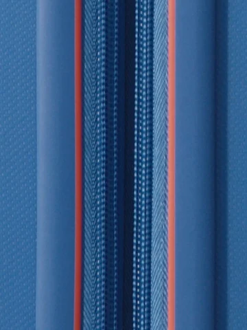
Things I Don’t Want to Forget
Product film · mymind2025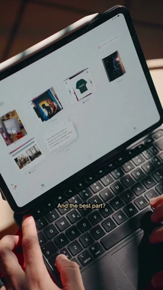
Diana
Portrait film · Personal project2026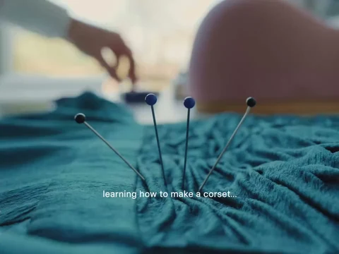
The Subtle Art of Slowing Down
Visual essay2025
More films, photography & studies
The Villa of Masterpieces
Short film · Fondazione Magnani-Rocca2026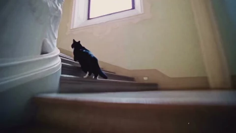
Girl of the Night Garden
Animated film2026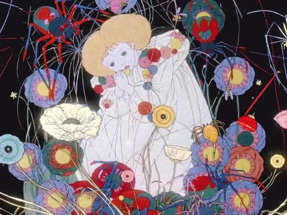
Destiny
Visual campaign · Noah Baine2026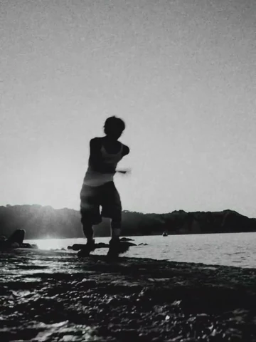
Finding Your Own Path
Short film2026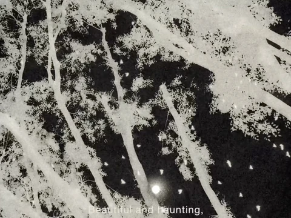
Connected / Disconnected
Visual essay2026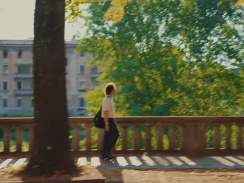
The Language of Wind
Visual study2026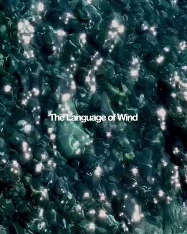
A Few Hours in Liguria
Photography2026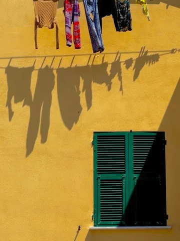
A Candle Flame or a Wildfire?
Short film2026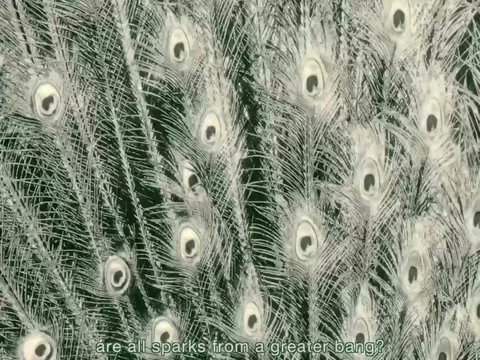
You, Me
Photography2026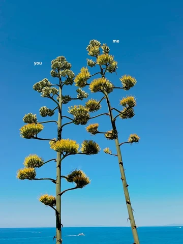
Like Roots
Short film2026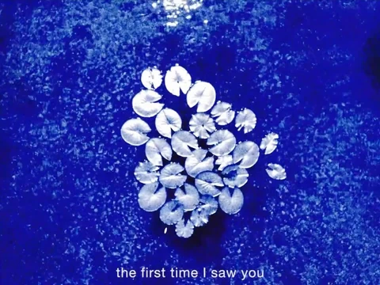
Liquid Buildings
Photography2026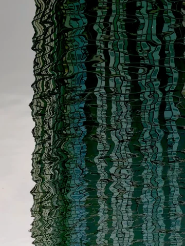
Fallin’
Visual campaign · Noah Baine2026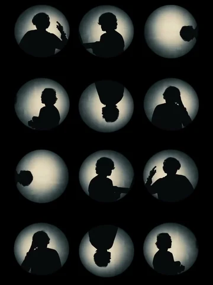
Upside Down
Photography2026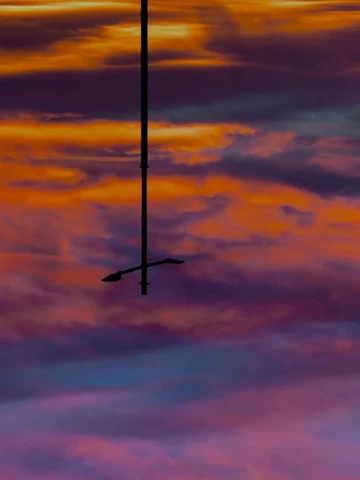
Comacchio
Photography2025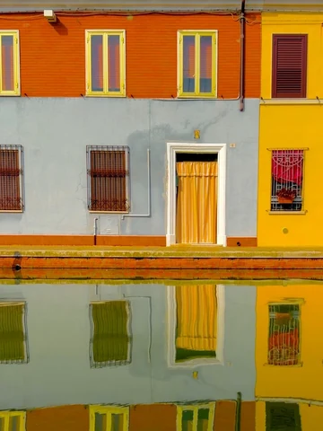
Dusk to Night
Photography2025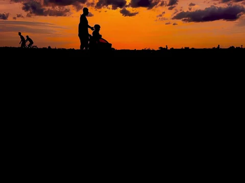
Contemporary Mosaic Biennale
Exhibition coverage · MAR Ravenna2025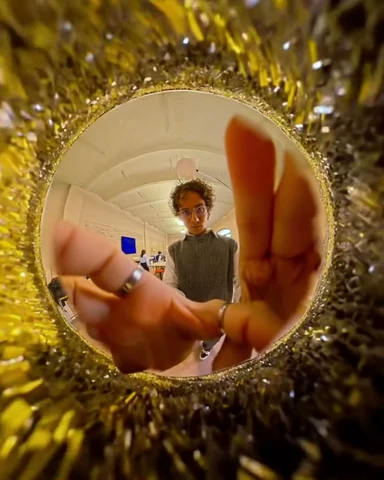
Trains
Short film2025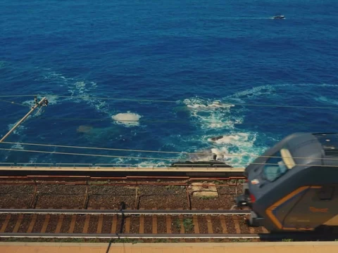
Language of Light
Product film · Plasma2025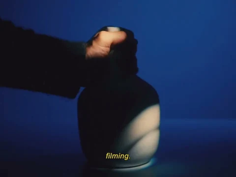
Slowing Things Down
Visual study2025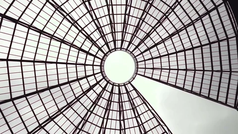
iPhone Setup
Product film · MOFT2025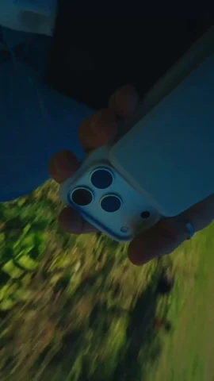
How I See Amsterdam
Photography · Nikon Italia2025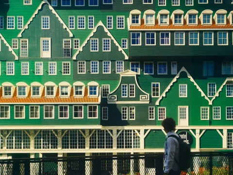
How I Felt Silence in Berlin
Photography2025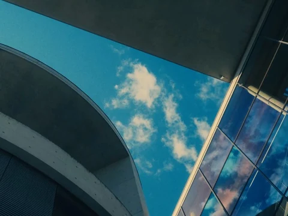
Shooting Static
Product film · MOFT2025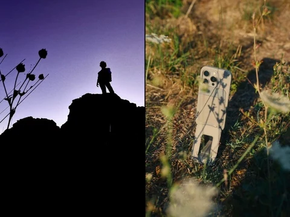
Warp
Product film · PolarPro2025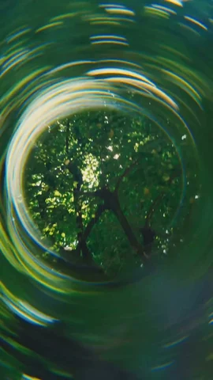
How I See Colors
Photography2025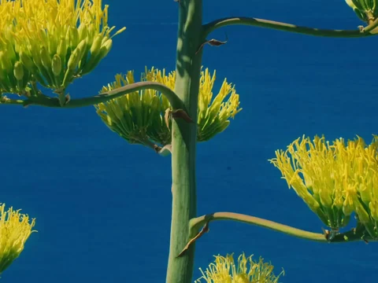
Il Parco Romantico
Documentary film · Fondazione Magnani-Rocca2025Analog
Product film · Ugmonk2025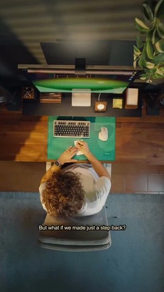
Giardino all’Italiana
Visual study2025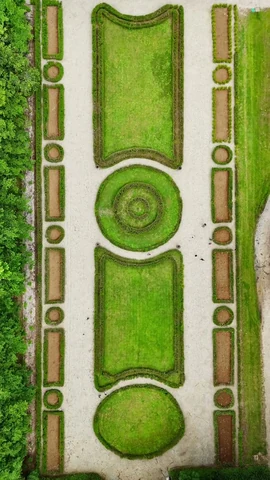
Pocket Dispo
Product film2025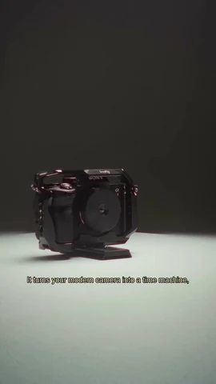
Brick
Product film2025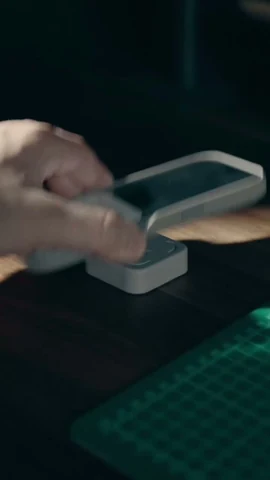
Suspended in a Daydream
Visual study2025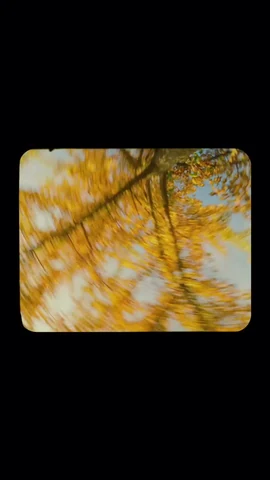
Postcards from My iPhone
Photography · Moment2025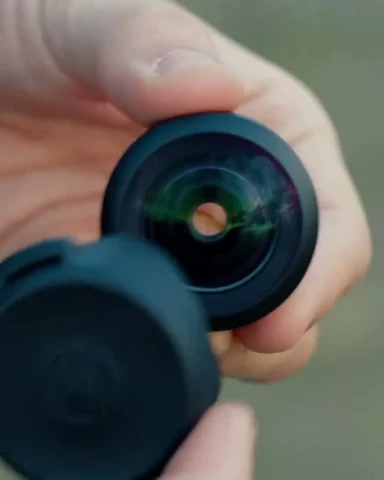
Weapon of Mass Distraction
Short film2024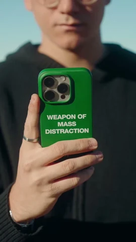
A Product Film in 24 Hours
Product film · MOFT2024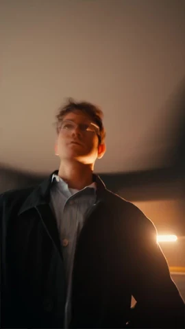